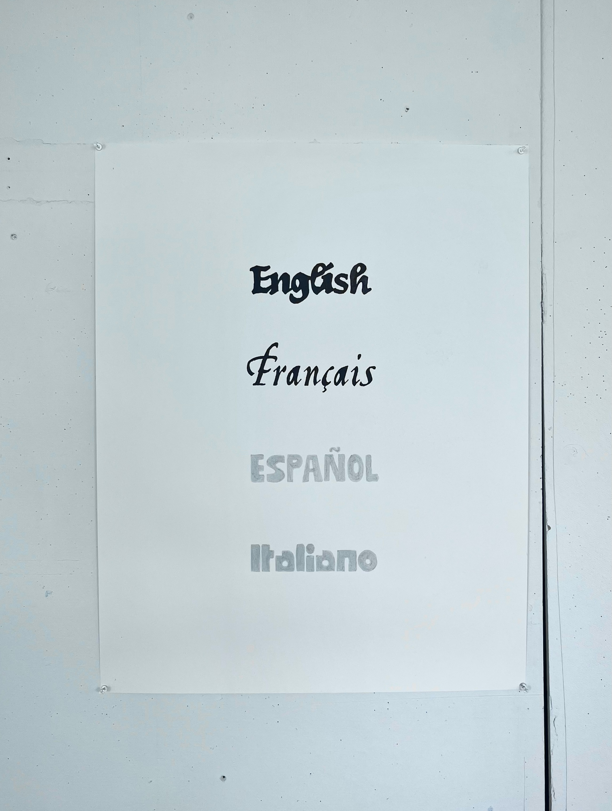
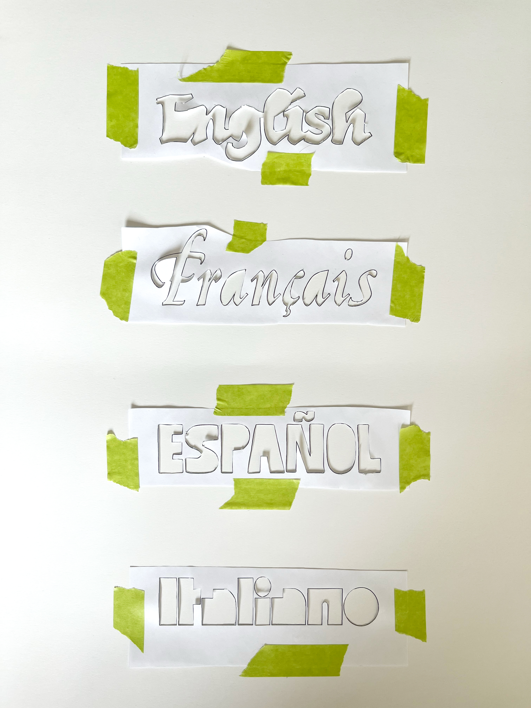
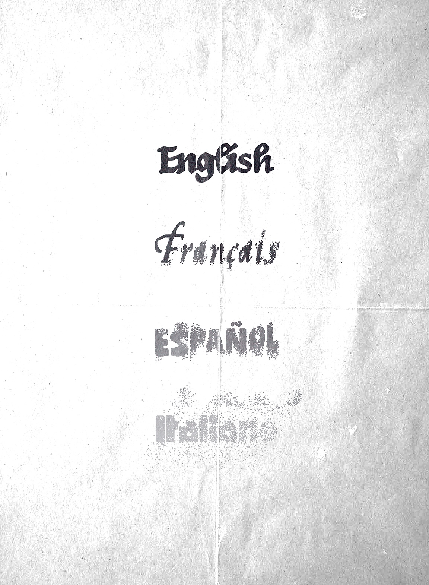

"Languages in order of survival" is a typographic self-portrait exploring language, identity, and cultural inheritance.
Language is often presented as something we possess: a skill measured through fluency, vocabulary, or pronunciation. However, for many diasporic communities, language is also something fragile—maintained through family, geography, and cultural proximity.
"Languages in order of survival" is a typographic reflection on the four languages that have shaped my identity: English, French, Spanish, and Italian.

Rather than ranking them by fluency, the composition organizes them according to their likelihood of remaining present in my life. Vertical hierarchy and a gradient from black to grey to white create a visual spectrum of linguistic permanence, reflecting the social, geographic, and personal conditions that influence each language's survival.
English occupies the strongest position, shaped by my upbringing in an anglophone environment. French follows, reflecting my life in Québec and its association with refinement, elegance, and cultural belonging. Spanish exists in a more distant relationship, connected to my Venezuelan heritage, yet complicated by migration and the impossibility of experiencing the country in the same way as those who remained. Italian occupies the most fragile position, reflecting the difficulty of maintaining a heritage language within a diaspora where younger generations often lose connection to it.

Typography becomes a way to embody these relationships. Each language is represented through a typeface that reflects not only its cultural associations but also my personal perception of it: Old English evokes the historical weight of English; an arabesque script expresses French as a language of elegance and refinement; a vernacular-inspired sans serif references my visual experiences in Latin America; and a geometric decorative typeface influenced by Italian Futurism recalls Italy's historic relationship with design and visual experimentation.
The result is a personal linguistic map: not a measure of what I speak, but a visualization of what may endure.

Completed in the Typography Compositions course under the supervision of Raphaël Daudelin at UQAM's School of Design, Fall 2024.